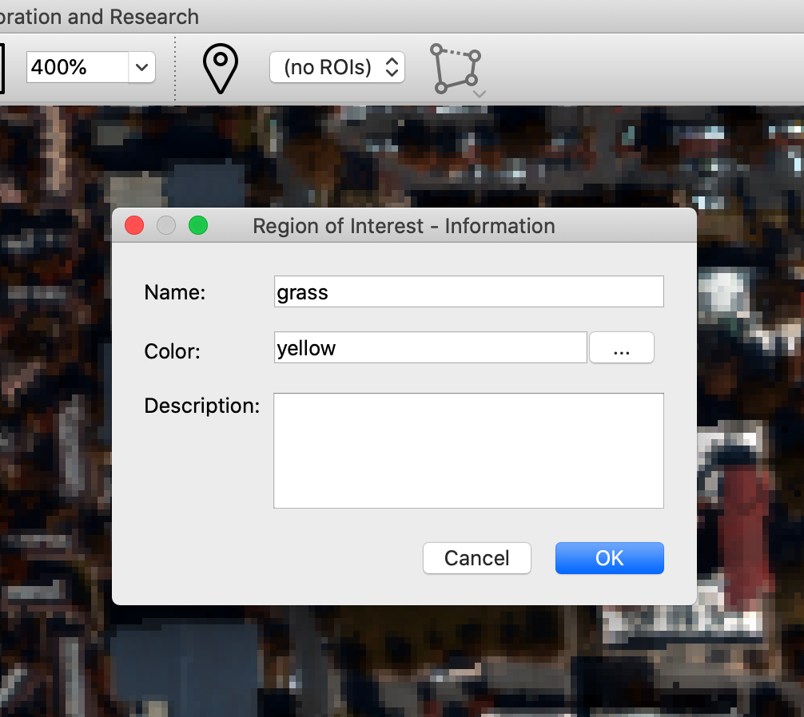
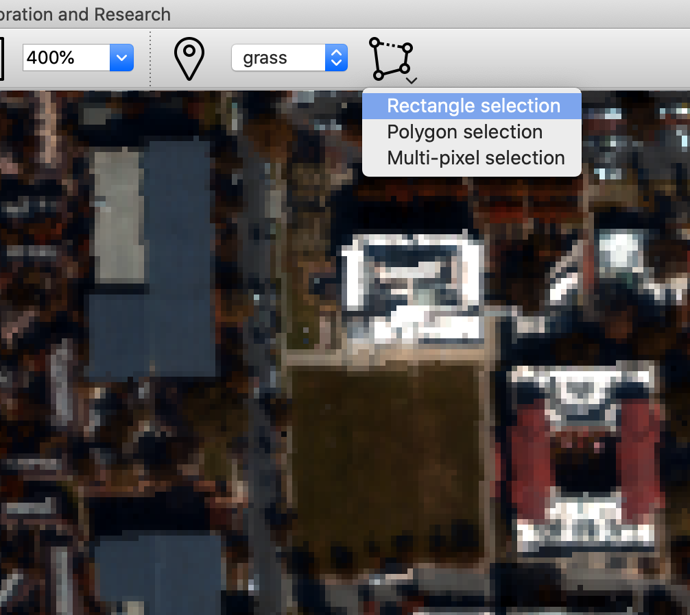
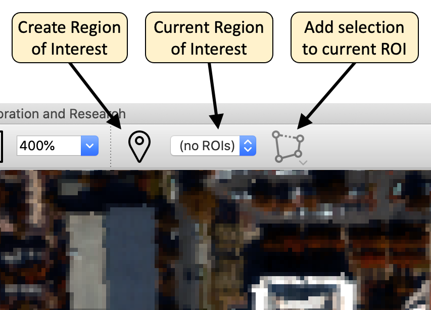
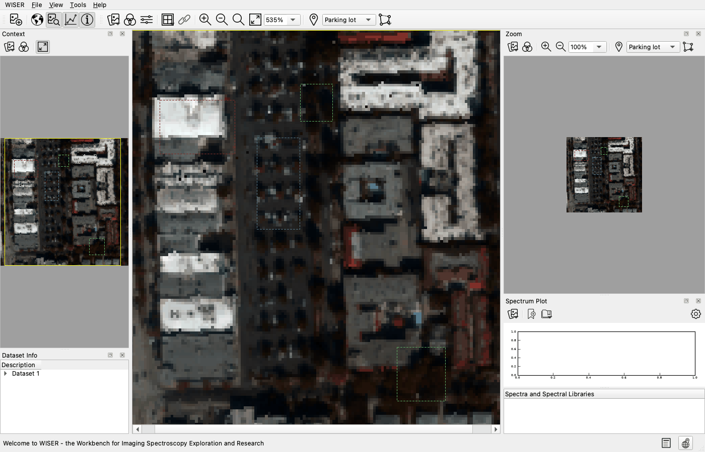
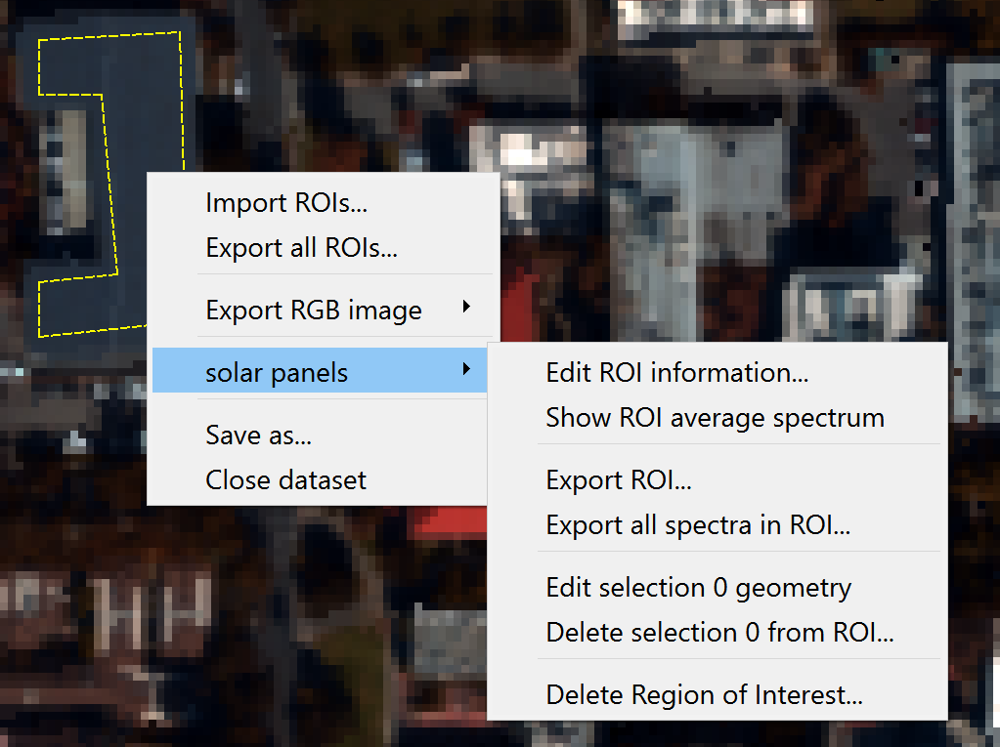
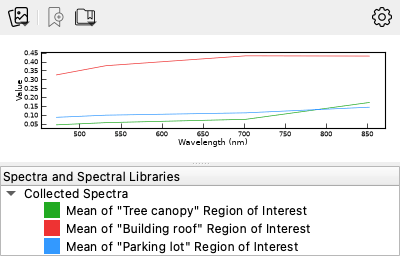

Regions of Interest#
A Region of Interest (ROI) is a named, colored set of pixels on a raster dataset. ROIs turn “that patch of ground” into something the rest of WISER can compute with: a mean spectrum, an endmember, a training set, a background estimate for MTMF, a mask, or an exported file.
For a walkthrough see Tutorial 3.
Structure#
One ROI holds any number of selections, each one of:
Rectangle selection — drag a box
Polygon selection — click vertices, close the shape
Multi-pixel selection — click pixels to add or remove them, then press Enter or right-click to finish; Esc cancels
Selections may be scattered anywhere in the scene and may overlap. Overlap is not a problem: every operation counts each pixel once.
Building one ROI from several small, well-separated selections usually gives a better class signature than one large block, because it samples more of the illumination and material variation.
Creating one#
Click Add new Region of Interest (the map-pin button) on the main toolbar or the zoom pane’s toolbar.
Enter a name, a description if you want one, and pick a color. Use a different color for each ROI, because it is the only thing distinguishing them on screen.
Click OK.


Adding selections#
Check that the ROI dropdown in the toolbar shows the ROI you want to add to. This decides where a new selection lands.
Click the selection tool button and choose the shape.

Draw on the image.





The status bar describes the interaction for whichever selection type is active. Selections may be drawn in the main window or the zoom pane and appear in every pane at once.
Working with an ROI#
Right-click inside a selection for the ROI context menu:
Action |
Result |
|---|---|
Edit ROI information… |
Rename, recolor, change the description |
Show ROI average spectrum |
Plots the mean spectrum of every pixel in the ROI. Collect it to keep it. |
Make ROI into mask |
Creates a new single-band dataset, 1 inside the ROI and 0 outside — usable directly in band math |
Export ROI… |
Writes the ROI geometry as GeoJSON |
Export all spectra in ROI… |
Writes every pixel’s spectrum to an ASCII file |
Edit selection n geometry |
Adjust one shape |
Delete selection n from ROI… |
Remove one shape |
Delete Region of Interest… |
Remove the whole region |


Session-wide equivalents:
File ▸ Import regions of interest… — read ROIs from a GeoJSON file
Image context menu ▸ Export all ROIs… — write every ROI at once


Note
Exporting the per-pixel spectra of a large ROI produces a large file, and WISER asks for confirmation above 200 pixels. Export the mean spectrum when you want a signature; export per-pixel spectra when you need the distribution: to report a standard deviation, or to check whether a class is bimodal and should be split.
Where ROIs are used#
Tool |
How it uses an ROI |
|---|---|
An ROI’s mean spectrum, collected, becomes an endmember |
|
Add Collected Spectrum uses an ROI mean as a reference |
|
ROI Based noise estimation uses an ROI as the background sample |
|
Manual initialization can start from ROI mean spectra |
|
Make ROI into mask gives you a 0/1 band to multiply by |
|
Create ROI from Selection turns a feature-space cluster into an ROI |
That last one runs the other way around: instead of drawing a region on the image and asking what it is, you select a cluster in feature space and find out where on the ground it lives.
Persistence#
ROIs, their selections and their average spectra are saved in a project. If you exclude an ROI’s source dataset from a project save, its average spectrum is kept as a snapshot: it still plots, but WISER can no longer recompute it from the image.
GeoJSON export is the route for taking ROIs to GIS software or to a colleague not using WISER.